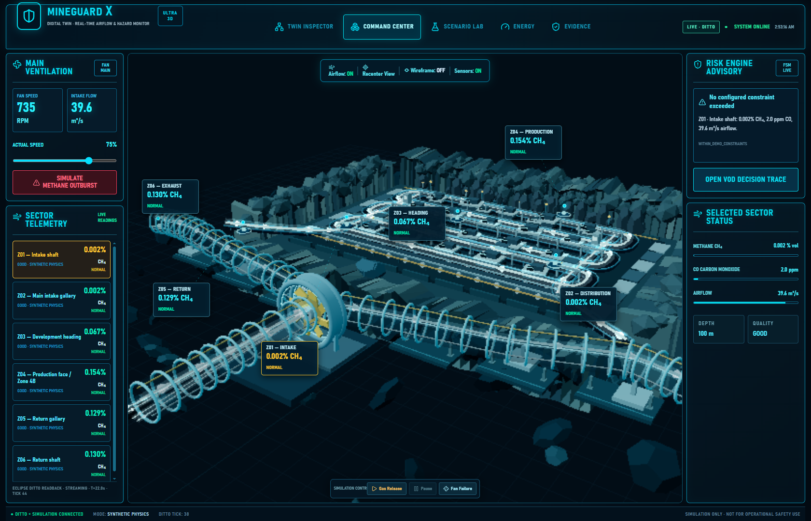
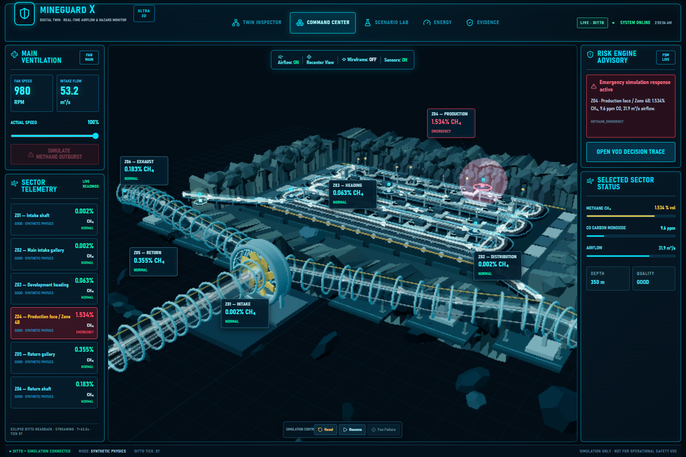
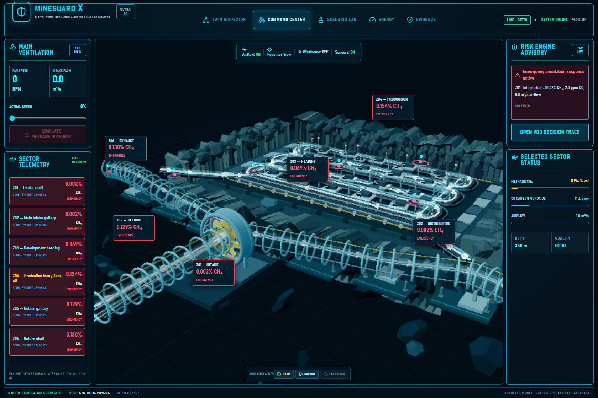
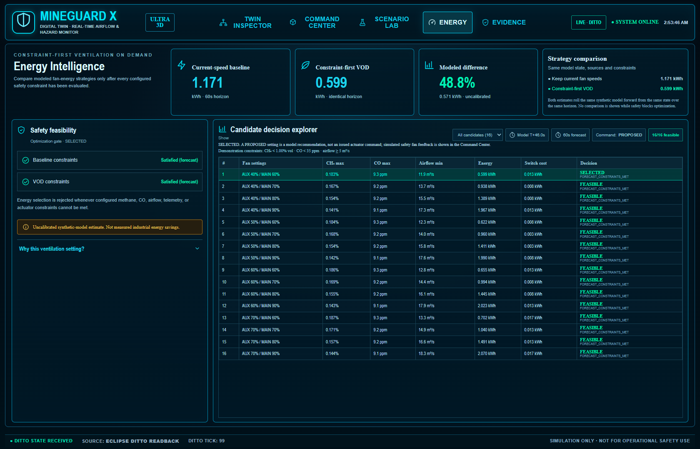
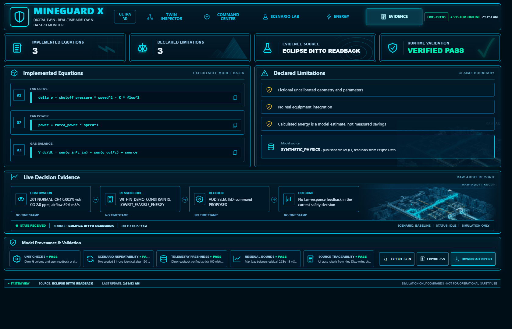

DeepCore Labs · Digital Mine on OpenEgiz 2026
Six connected ventilation zones and two fans live as Eclipse Ditto twins. A deterministic airflow and gas model publishes through OpenEgiz MQTT, and every value in the interface is read back from Ditto. Operators, ventilation engineers and reliability engineers use it to decide how to ventilate safely and efficiently.
SIMULATION ONLYFICTIONAL, DOCUMENTED PARAMETERSOPENEGIZ v1.0.4 + ECLIPSE DITTO

Concept
A gassy coal-mine section: intake shaft, main intake gallery, development heading, production face, return gallery, return shaft; exhausting main fan and auxiliary heading fan.
Control-room operator (what is happening, where) · ventilation engineer (which fan setting is safe, at what energy) · reliability engineer (what a fan failure does; did the requested response happen).
When rising CH₄/CO requires stronger ventilation, a production stop or evacuation; which fan speeds satisfy every constraint, and which uses least energy; whether the response was achieved.
Changing one fan changes airflow, and therefore methane dilution, in every connected zone. Methane accidents such as Kostenko (Karaganda, 2023) show the stakes. Main fans are large electrical loads, but safety must always outrank energy.
Mine model
Z01 Intake → Z02 Distribution → { Z03 Heading (aux fan) ∥ Z04 Production face } → Z05 Return → Z06 Return shaft (main fan)
| Thing | Features published every second |
|---|---|
mineguard:mine-01 | max CH₄, max CO, total airflow, fan power, per-airway flow E01–E06, tick, paused |
mineguard:zone-z01…z06 | methane (% vol), co (ppm), airflow (m³/s), risk (state, reasons, quality), safety_interlock (trip, evacuation, fan requests, equipment_io=false) |
mineguard:fan-main / fan-aux | speed and requested speed (% rated), rpm, power (kW), state RUNNING/FAULTED |
Topology is validated at startup (connected, acyclic, flow-balanced): mineguard/data/mine_topology.json. Twins share _parents: mineguard:mine-01 and the platform policy default:basic_policy.
Architecture
Complete modify /features messages to the OpenEgiz broker; Ditto events → Telegraf → InfluxDB → Grafana. The official make smoke passes with MineGuard publishing.
A publication counts only when all nine twins return the same run ID and tick. The UI state is rebuilt from that Ditto JSON (ECLIPSE_DITTO_READBACK). Scenario commands are guarded and simulation-only.
Physics
Airway: Δp = R·Q·|Q| · Fan: Δp = p₀·s² − K·Q² · Power: P = P_rated·s³
Zone gas balance: V·dC/dt = G + Σ Q_in·C_in − Σ Q_out·C (methane and CO)
Bisection on the common branch pressure; flow is conserved at every junction. Main-fan failure → zero network flow.
Explicit sub-steps bounded by CFL 0.5; values outside [0,1] are rejected, never clipped. Live residual ≈ 2e-15 m³.
Methane is a fraction internally and % volume outside (0.8 % = 8,000 ppm); CO ppm; airflow m³/s; power kW; energy kWh.
Risk and simulated safety
| State | Trigger (demonstration) | Simulated response |
|---|---|---|
| ADVISORY | CH₄ ≥ 0.5 % or CO ≥ 25 ppm | ventilation request; optimizer still allowed |
| WARNING | CH₄ ≥ 1.0 %, CO ≥ 35 ppm (NIOSH REL), or airflow < 5 m³/s | production stop (trip power), optimizer disabled |
| EMERGENCY | CH₄ ≥ 1.5 %, CO ≥ 50 ppm (OSHA PEL), or main fan failed | evacuation advisory; healthy fans driven to 100 %; failed fan excluded |
| UNKNOWN_DATA | stale or invalid telemetry | treated as unsafe: production stop and evacuation, never a safe reading |
The 1.0 % and 1.5 % tiers mirror US 30 CFR 75.323(b) action levels, for demonstration only, not as a compliance claim. Downgrades use hysteresis; every transition carries reason codes.
Mine visualization
Zone markers take the colour of the twin's risk state. Labels show live CH₄ and the risk state. A false-colour methane volume grows with CH₄. Airflow particles move with the measured intake flow and stop at zero. The fan rotor follows actual RPM and its rim turns red on a fault.
The rails show main-fan RPM, intake flow, every zone's CH₄, the risk advisory, and the selected zone's CH₄, CO and airflow.
On CPU-only WebGL a lite profile applies automatically: 88 draw calls instead of 1,229, Lambert shading and no backdrop blurs.
What-if scenario S1
The Z04 source rises from 0.04 to 0.8 m³/s for 180 s. Methane accumulates through the mass balance:
| Stage | Tick | s | Z04 CH₄ |
|---|---|---|---|
| ADVISORY | 19 | 9.5 | 0.53 % |
| WARNING | 48 | 24.0 | 1.02 % |
| EMERGENCY | 87 | 43.5 | 1.53 % |
At EMERGENCY, Ditto shows the Z04 interlock tripped and both fans at 100 % (model feedback ACHIEVED). Undo: Reset restores the exact tick-0 baseline.

What-if scenario S2
At T+10 s the main fan faults. Ditto reads back 0 RPM, FAULTED; network airflow is 0 m³/s; every zone goes to EMERGENCY with reason FAN_FAILED; the failed fan is excluded from responses; methane starts to accumulate; the optimizer reports NO_FEASIBLE_SAFE_OPTIMIZATION.
Undo: Reset, or the fault clears at T+90 s. Pause and resume freeze and continue the simulated clock.
Both scenarios run from the Command Center or the Scenario Laboratory without code changes.

Energy module
From the initial state: 1.171 kWh at current speeds vs 0.599 kWh selected (main 60 %, aux 40 %) — 48.8 %, with all 16 candidates feasible.
Uncalibrated synthetic model estimate, not measured savings. Disabled while any zone is WARNING, EMERGENCY or UNKNOWN_DATA.

Evidence
198 backend tests (pytest), Ruff, strict mypy · 31 frontend tests (Vitest), TypeScript, ESLint, production build.
official make smoke + MineGuard WebSocket and Ditto checks; S1 emergency, interlock and reset; headless-Chrome checks of all five routes on desktop and mobile with no browser errors.
Ditto vs model at the same tick: CH₄ error 3.9e-11, CO 3.1e-9 ppm · balance residual 2.2e-15 m³ · two seeded S1 runs identical, reset exact · readback fresh within 1 s · single-publication traceability.

Run it · limits
sudo apt-get update && sudo apt-get install -y make
bash mineguard/scripts/bootstrap.sh → http://127.0.0.1:8091
Fictional, uncalibrated mine; steady network flow without leakage or reverse flow; well-mixed zones; quasi-steady fan response; 3D renders at a few frames per second on CPU-only WebGL; no obstruction or sensor-loss scenario in the UI.
Surveyed geometry, calibrated sensors and fans, an OT gateway, authentication, redundancy, alarm management, a hazard analysis and regulatory approval. All actions here are simulated.
FICTIONAL MODELSIMULATED ACTIONSBUILT ON OPENEGIZ